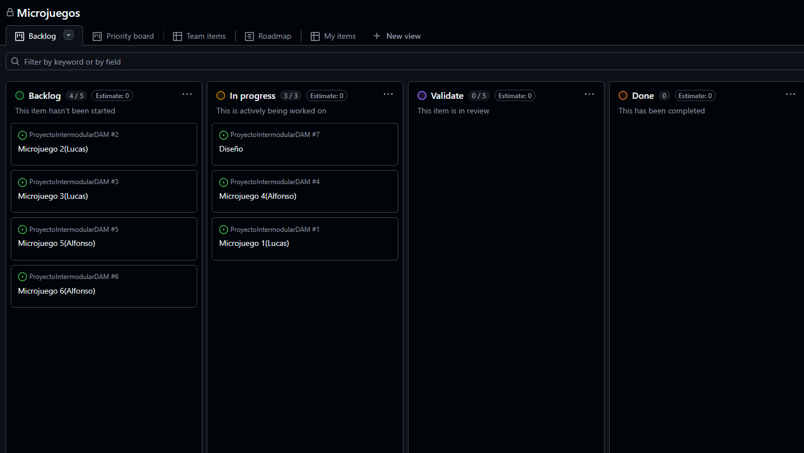
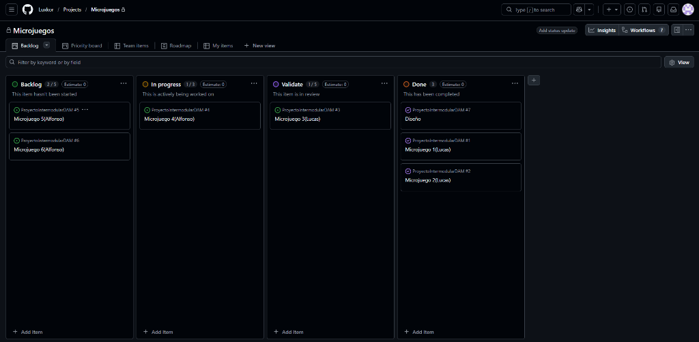
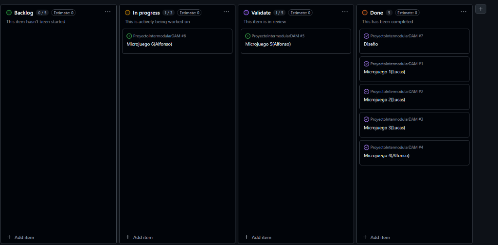

Día 1: Inicio del proyecto "MicroGame Rush". Implementada la estructura base y
el motor de juego.

Día 2: Hoy hemos hecho los minijuegos. Se han añadido 4 modos de juego (Machaca,
Cálculo, Reflejos y Direcciones), sistema de dificultad progresiva que reduce el tiempo, y
animaciones de impacto al fallar.
Día 3: Introducción del minijuego interactivo "Limpia la Playa" con mecánicas de
arrastrar y soltar. Se ha simplificado la rotación para pulir la experiencia de usuario, se ha
ajustado la dificultad para que escale cada 10 puntos, y se ha añadido soporte para
Pantalla Completa.
Día 4: Sustitución del minijuego de cálculo por "Encuéntralo en la Oscuridad"
(X-Ray) con iluminación dinámica y memoria de rotación.
Día 5: Corrección de errores críticos en "X-Ray" (doble puntuación). Se ha
reestructurado la interfaz para apilar el HUD y el área de juego verticalmente, expandiendo el
espacio a 950px de altura.

Día 6: ¡Nueva mecánica de cocina! Implementación de sistema de recetas,
validación de ingredientes y efectos visuales de preparación culinaria.
Día 7: Actualización del estado del proyecto. Se ha completado el diseño y los
microjuegos del 1 al 4. El microjuego 5 está en fase de validación, mientras que el microjuego 6
se encuentra actualmente en desarrollo.

Día 8: Reestructuración del sistema de archivos del proyecto hacia un formato
más profesional, aislando los recursos como imágenes, hojas de estilo y scripts dentro de un
nuevo directorio assets/ y moviendo el archivo index.html a la raíz
del proyecto.
Estado Actual: Experiencia de juego centrada y pulida. El motor de dificultad
ahora es más equilibrado, permitiendo periodos de adaptación antes de aumentar la velocidad.
Próximos pasos: Reintroducir minijuegos antiguos con el nuevo estándar visual y
añadir efectos de sonido ambientales.